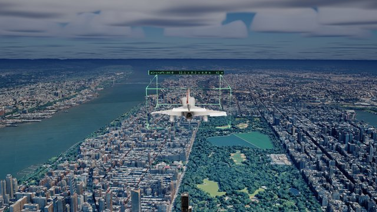
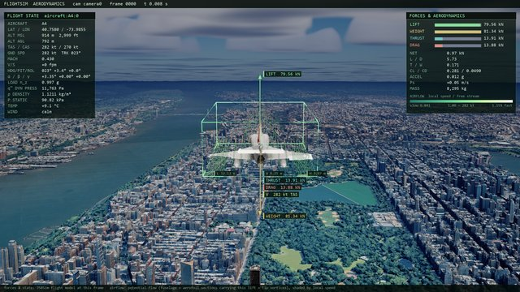
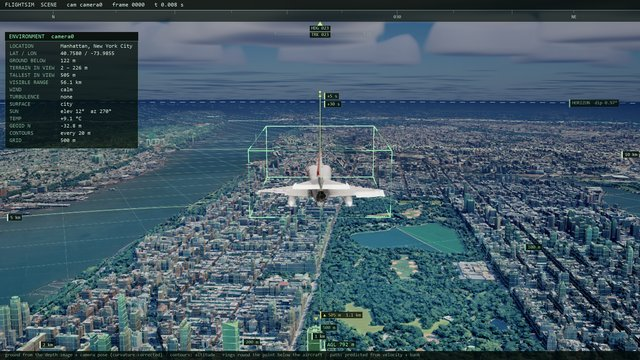

For a Windows computer starting from the GitHub repository. Branch: phase-3-completed. Follow the parts in order.
The project checks every version exactly, so install these exact versions. If the launcher later stops with a ..._mismatch line, the version installed is not the one listed here.
| What | Exact version | Where to get it |
|---|---|---|
| Epic Games Launcher + Unreal Engine | 5.7.4 | epicgames.com → install the launcher → Unreal Engine tab → Library → add engine 5.7.4 (default folder C:\Program Files\Epic Games\UE_5.7) |
| Cesium for Unreal plugin | 2.30.0 | Fab (inside the Epic Games Launcher) → search "Cesium for Unreal" → Install to Engine → 5.7 |
| Visual Studio 2022 (Community is free) | MSVC 14.44.35207 Windows SDK 10.0.26100.0 | visualstudio.microsoft.com → in the installer tick Desktop development with C++; under Individual components make sure MSVC v143 (14.44) and Windows 11 SDK (10.0.26100.0) are ticked |
| Python | 3.12.10 | PowerShell: winget install -e --id Python.Python.3.12 --version 3.12.10 |
| ffmpeg (makes the video clips) | 9.0.2 | PowerShell: winget install -e --id Gyan.FFmpeg --version 9.0.2 |
| Git | any recent | PowerShell: winget install -e --id Git.Git |
| GitHub access | — | The repository is private: the owner must add your GitHub account. Git asks you to sign in the first time. |
| Cesium ion token (only if the map tiles fail) | — | Free account at cesium.com/ion → Access Tokens. Paste it later in the web app's Settings. |
Every command in this guide is for PowerShell. Open it from the Start menu (type PowerShell). A PowerShell line starts with PS C:\Users\you>. If your window shows only C:\Users\you> (no PS), it is Command Prompt: type powershell and press Enter first.
cd $HOME git clone --depth 1 -b phase-3-completed https://github.com/DhruvaValluru/flightsim.git cd flightsim
cd $HOME\flightsim & ".\Launch FlightSim.cmd"
The launcher runs seven steps and prints each one. The first time takes a long while (often 30–90 minutes); later starts take a minute or two.
| Step | What it does |
|---|---|
| 1 install | Sets up Python and its packages, builds the flight-physics library (JSBSim) |
| 2 preflight | Checks every tool and version from Part 1, and names anything missing |
| 3 build | Builds the Unreal plugin |
| 4 materials | Creates the project's materials |
| 5 aircraft | Downloads and imports the aircraft 3-D models |
| 6 bake | Downloads and prepares the Grand Canyon and Yosemite terrain |
| 7 server | Starts the web app and opens the browser |
When the last line says READY, the web app is at http://127.0.0.1:8008/. Leave that window open (closing it stops the app). If a line says FAILED <step>: <reason>, the reason names the fix; the full log is logs\launch.log.
The first time a scene uses something new (a storm, rain, a city's map tiles, a place's terrain) the computer has to download or build it, and that one run is slow — a first thunderstorm can take over an hour on a laptop without a gaming graphics card. These commands do all of that up front, so every run afterwards starts quickly. Run them in a second PowerShell window while the app from Part 4 is still running (READY).
cd $HOME\flightsim .\.venv\Scripts\python.exe scripts\bake_terrain.py --all
cd $HOME\flightsim $env:FLIGHTSIM_GOOGLE_TILES_TIMEOUT = "600" .\.venv\Scripts\python.exe scripts\run_test_scenarios.py --still
This renders one frame of each of the project's test scenes, one after another: golden hour over Yosemite, New York (downloads the city's map tiles), rain, a thunderstorm, a tornado, mountain turbulence, the cockpit and tower views and more. Expect 2–4 hours the first time; leave it running. The results are collected in runs\test_scenarios\index.html.
--resume added to finish only what is left.--list.Big cities can take more than the default 3 minutes to load their map tiles. Run this once; it is remembered:
[Environment]::SetEnvironmentVariable("FLIGHTSIM_GOOGLE_TILES_TIMEOUT", "600", "User")
Then close the app window and start it again (Part 6) so it picks this up.
cd $HOME\flightsim & ".\Launch FlightSim.cmd"
Wait for READY; the browser opens at http://127.0.0.1:8008/.
Close the app window first, then:
cd $HOME\flightsim git fetch --depth 1 origin git checkout -B phase-3-completed origin/phase-3-completed & ".\Launch FlightSim.cmd"
The analysis pictures and 3-D box downloads in Part 9 arrived in an update on 21 Nov 2026. If you cloned before then, do this part once to get them.
Each starts with Cinematic:, which turns on the best-looking render (colour grade, depth of field, low sun). Copy one into the prompt box as it is.
Tip: set clip to 1 frame (preview) to see the shot quickly, then render a 6–10 s clip of the one you like. Prompt 6 is a storm: its first run is slow unless Part 5 was done.
Altitudes are measured from sea level: the Grand Canyon rim is about 7,000 ft and Yosemite's peaks about 9,000–13,000 ft, so stay above the ground. Say thunderstorm (it brings its own lightning), not "lightning".
Every finished run keeps three kinds of output for each camera:
physics.csv table.


On a clip, the Detailed picture also graphs lift, load factor, true airspeed and altitude over the clip, with the current frame marked (OVER THE CLIP).
| Link | You get | Inside |
|---|---|---|
| download every frame with its labels (zip) | <run>_<camera>_frames.zip | frame_NNNN.png (as rendered), frame_NNNN.json (that frame's labels and flight state), boxed/frame_NNNN_boxes.png (2-D boxes), boxed3d/frame_NNNN_box3d.png, manifest.json, README.txt |
| download the 3-D pictures (3D zip: plain, detailed, scene) | <run>_<camera>_3d_boxes.zip | frame_NNNN_box3d.png, frame_NNNN_box3d_detailed.png, frame_NNNN_box3d_scene.png, frame_NNNN_box3d.json, physics.csv, README.txt |
| overlay video: detailed · scene · plain | <run>_<camera>_<kind>_overlay.mp4 | The whole clip with that picture drawn on every frame |
| open the interactive 3-D viewer | a page in the browser | The frame with each overlay layer switched on or off (3-D box, forces & velocity, airflow, labels, landmarks, flight path, horizon, scene). It has zoom and pan, and a play button and slider to step through the clip. |
| dataset: COCO · KITTI · WebDataset · YOLO · Pascal VOC · all five | <run>_dataset_<format>.zip | The labelled dataset in that format, with its dataset card |
The 3-D zip and the overlay videos are built when you click them. On a clip this can take a minute or more: progress shows next to the link, and the download starts by itself when it says ready. For a clip, the three pictures are drawn for 12 evenly spaced frames (first and last included), and every frame gets its JSON. To get the pictures for every frame, add ?every=1 to the end of the 3D-zip link.
| File | What is in it |
|---|---|
frame_NNNN.json | Where the camera was, which way it pointed, and its lens. state has every flight-recorder channel at that moment. labels has the 2-D box (clipped and unclipped), truncation, the 3-D box in camera coordinates, keypoints and the horizon line. |
frame_NNNN_box3d.json | box_3d: each aircraft's centre, size, axes and orientation, with a rebuild check. flight_physics: every force as a vector and a magnitude, the force balance, velocity (TAS, CAS, Mach), alpha, beta and gamma, air data, CL, CD and CY, energy and controls. panels: the panels exactly as printed. overlay and scene_overlay: every point each picture draws, in metres and pixels. |
physics.csv | One row per frame, in time order: altitude, speeds, Mach, attitude, alpha, beta and gamma, load factor, lift, drag, thrust, weight and net force (kN), L/D, CL, CD, dynamic pressure, density, wind and specific excess power. Units are in the second row. |
manifest.json | This camera's block and all its frames, the scene's landmarks, the coordinate system, and the object and class tables. |
Each zip has a README.txt that explains every file in it.
In the Dataset section under the clip, tick 2-D box pictures and/or 3-D box pictures (and flight table (CSV + NPZ) for the numbers as a table), then press Download dataset (zip).
Everything a run made is in runs\webapp\<run id>\ inside the project folder. Once built, the zips and overlay videos are kept in that run's downloads\ folder, so the second download is instant.
explorer $HOME\flightsim\runs\webapp
The forces come from the JSBSim flight model's state at each frame. The airflow lines come from a fast analytic model (potential flow plus lifting line), not CFD. For how far to trust the numbers, see docs/accuracy/FLIGHT_MODEL_CHECK.md in the repository.
| You see | Do this |
|---|---|
The filename, directory name, or volume label syntax is incorrect or & was unexpected | You are in Command Prompt. Type powershell, press Enter, run the command again. |
FAILED preflight: toolchain.<tool>_mismatch: found X, pinned Y | Install exactly version Y of that tool (Part 1), then start again. |
terrain.google_tiles: the view was still NN % loaded after 180 s | Do Part 5c, restart the app, run again. |
| The page looks old after an update | Close the browser tab and open http://127.0.0.1:8008/ again. |
| "Unable to connect" in the browser | The app is not running: start it (Part 6) and wait for READY. |
| A run is very slow the first time | Normal for a new scene type; Part 5 avoids it. It is fast the next time. |
| A run fails | Open the run's log: runs\webapp\<run id>\render.log (the last lines name the reason). |
| No Plain / Detailed / Scene tabs, or no 3D-zip link on the Frames page | The install is older than the 21 Nov update: do Part 7, then reload the page. |
| The 3D zip or overlay video seems stuck | It is still drawing a long clip. Leave the tab open; the download starts by itself when it says ready. |